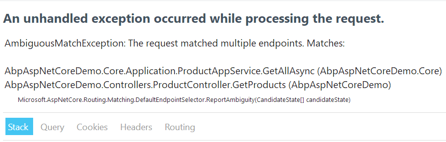

【ABP框架笔记】 5.控制器自动生成api接口的事项
/ / 点击 / 阅读耗时 3 分钟在研究RemoteServiceAttribute时，在控制器中使用它的时候，发现以下几个情况
1. RemoteServiceAttribute使用方式
注意：必须在Controller和Action上同时打上该标签，才会生成对应的api接口。
如果一个Action上既有RemoteServiceAttribute又有ApiExplorerSettings那么abp不会处理，会将其交由.net core本身去处理。
2. 控制器要生成api接口应当使用的配置
2.1 特性标签
1 | [Route("api/Custom")] |
这两个必须同时出现，才能将一个控制器转成api接口。单独将控制器启用ApiExplorerSettings会报错，异常信息：
InvalidOperationException: The action ‘AbpAspNetCoreDemo.Controllers.ProductsController.UglyActionNameForSearch (AbpAspNetCoreDemo)’ has ApiExplorer enabled, but is using conventional routing. Only actions which use attribute routing support ApiExplorer.
2.2 应当在每个方法(action)而不是控制器上打标签
在控制器类上打标签后，生成的api地址都是一样的，且方法都是POST.要在每个Action单独设置请求地址。
要想将Action转成Get请求，需要在Action上打标签[HttpGet]
2.3 相同名称的api地址
在服务类里生成了 api/services/app/Product/GetAll的请求地址，然后再在控制里添加Product控制器和GetAll方法，js里会有两份一模一样的api方法
1 | // action 'getProducts' 这里是服务类生成的 |
在发送请求时，后端会报错，提示有歧义的请求。所以在添加服务类或者控制器的时候，要避免出现相同路径出现。
